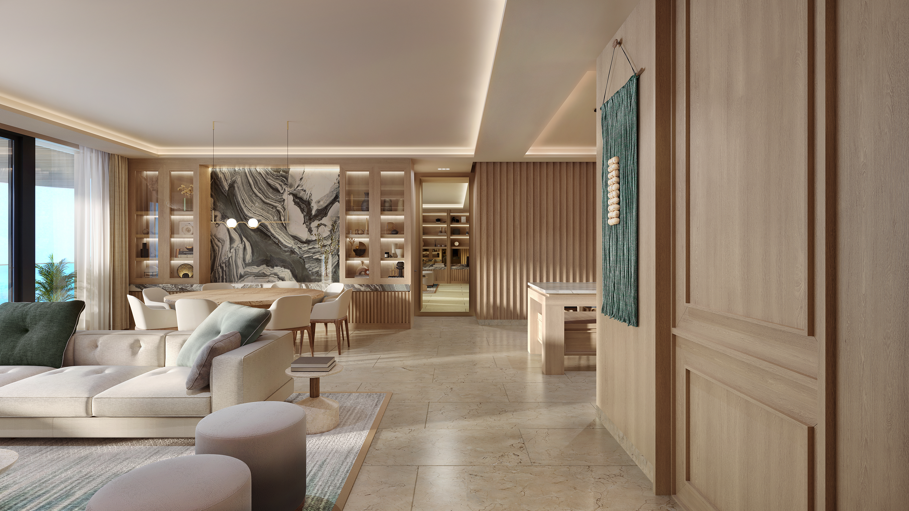
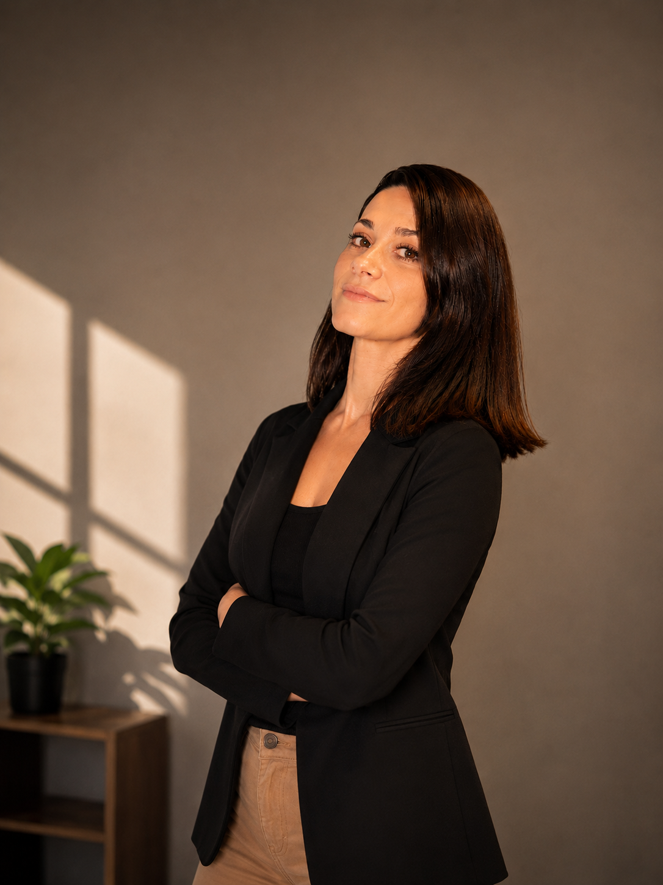
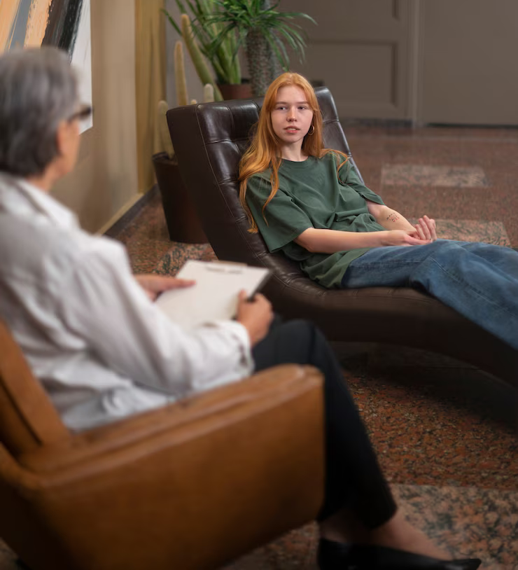
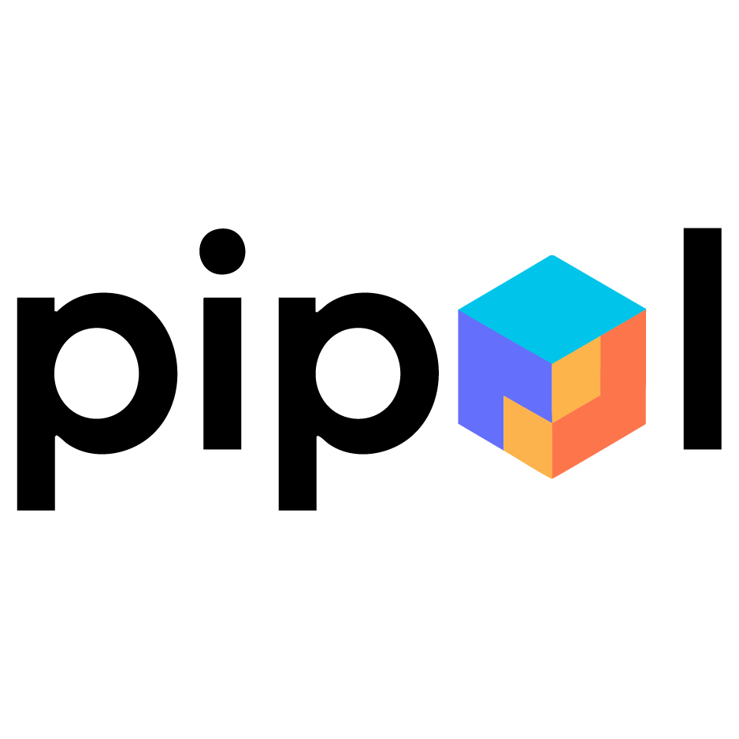
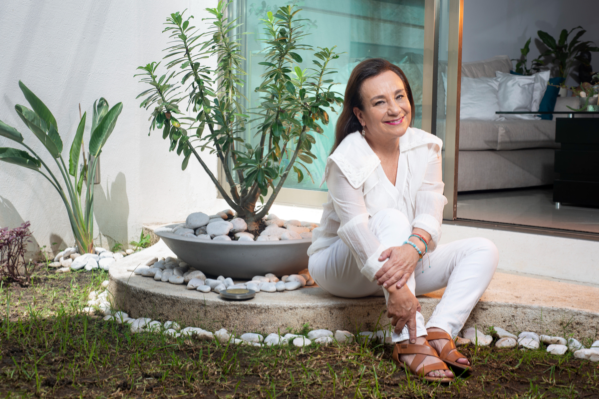
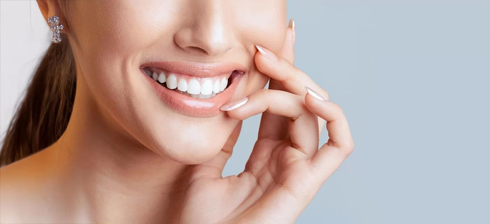
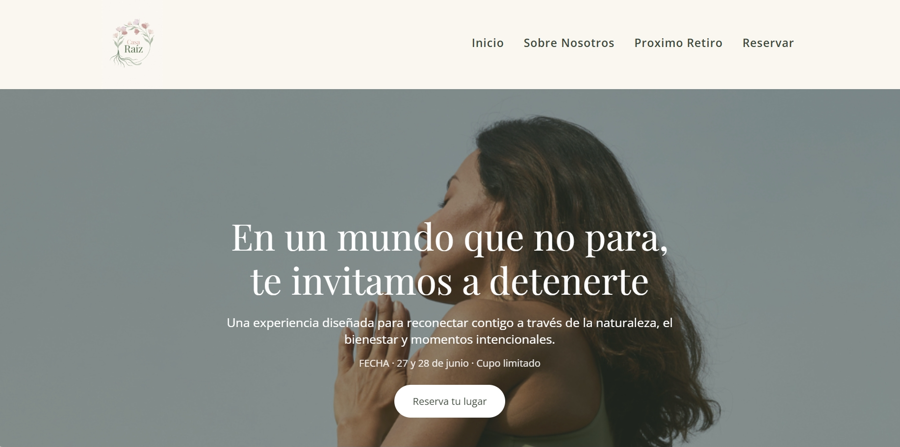
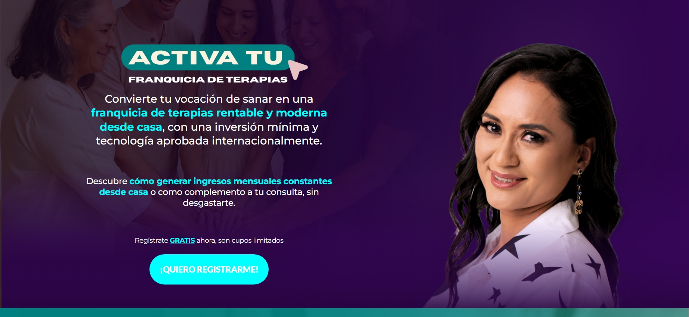

Marietta
Presentación de departamentos en Isla Mujeres, con una estructura visual para explorar el desarrollo y solicitar información.
Enlace de vista previaAbierta a oportunidades laborales y freelance
SHARON ASENCIO · DISEÑO & DESARROLLO WEB
Creo sitios web, landing pages y funnels que conectan marcas con personas. Completo la experiencia con CRM, automatizaciones básicas e integración de redes sociales.

01 / TRABAJOS SELECCIONADOS
Una selección de sitios, landing pages y funnels para distintos sectores y objetivos.

Presentación de departamentos en Isla Mujeres, con una estructura visual para explorar el desarrollo y solicitar información.
Enlace de vista previa
Sitio para presentar servicios de estética dental y facilitar el contacto con la clínica.

Presencia digital para una consulta de psicología, con información sobre el acompañamiento terapéutico y opciones de contacto.

Diseño y desarrollo web, landing pages, configuración de CRM, automatizaciones básicas e integración de redes sociales.

Diseño y desarrollo web, landing pages, configuración de CRM, automatizaciones básicas e integración de redes sociales.

Sitio para un centro de producción y formación en audio, música y entretenimiento. Información de programas y contacto con asesores.

Landing enfocada en carillas dentales y diseño de sonrisa, con presentación de servicios y llamadas a la acción.
Enlace de vista previa
Una experiencia visual para presentar propuestas de bienestar, retiros y experiencias.

Página de captación y presentación de una propuesta de negocio digital.

Presentación de una marca personal y sus programas, con una invitación a solicitar una sesión de diagnóstico.
Enlace de vista previa02 / EXPERIENCIA
Continúo trabajando en agencia de marketing digital, creando y diseñando soluciones para marcas y negocios.
Del diseño visual a la implementación: una mirada integral de cada proyecto.
Creación y diseño de páginas responsive, con jerarquía visual clara, navegación sencilla y llamadas a la acción.
Estructura y desarrollo de embudos para presentar una propuesta, captar consultas y guiar a las personas hacia el siguiente paso.
Organización de contactos y pipelines, configuración de workflows básicos de seguimiento e integración de redes sociales.
03 / SOBRE MÍ
Soy Sharon, desarrolladora web con experiencia en agencia de marketing digital. Me gusta transformar ideas en sitios claros, cuidados y fáciles de usar.
Trabajo en la creación y el diseño de sitios web, landing pages y funnels, combinando la identidad de cada marca con una implementación funcional. También configuro automatizaciones básicas, CRM e integraciones de redes sociales.
Busco nuevas oportunidades laborales y proyectos freelance con GoHighLevel, WordPress, Builderall y Odoo. Me interesa aportar mi experiencia y seguir creciendo junto a equipos de marketing y desarrollo.
Webs, landing pages, funnels, CRM y workflows básicos.
Diseño y desarrollo de sitios web.
Creación de páginas y funnels.
Experiencia con la plataforma y apertura a nuevos proyectos.
HTML · CSS · JavaScript · Diseño responsive
04 / HABLEMOS
Disponible para nuevas oportunidades
¿Buscas sumar una desarrolladora a tu equipo o crear una nueva experiencia digital? Me encantará conocer tu propuesta.
sharonasencio@gmail.com